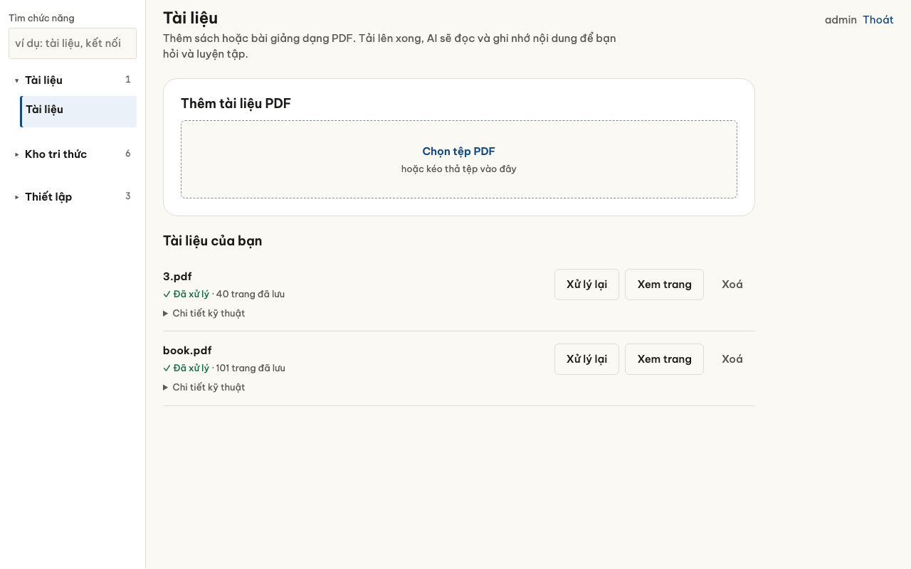
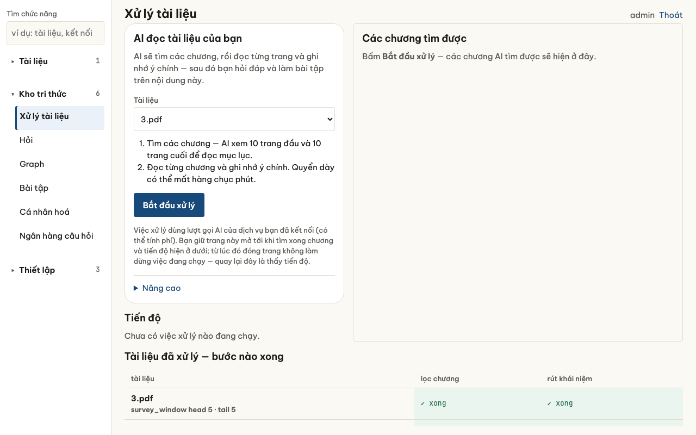
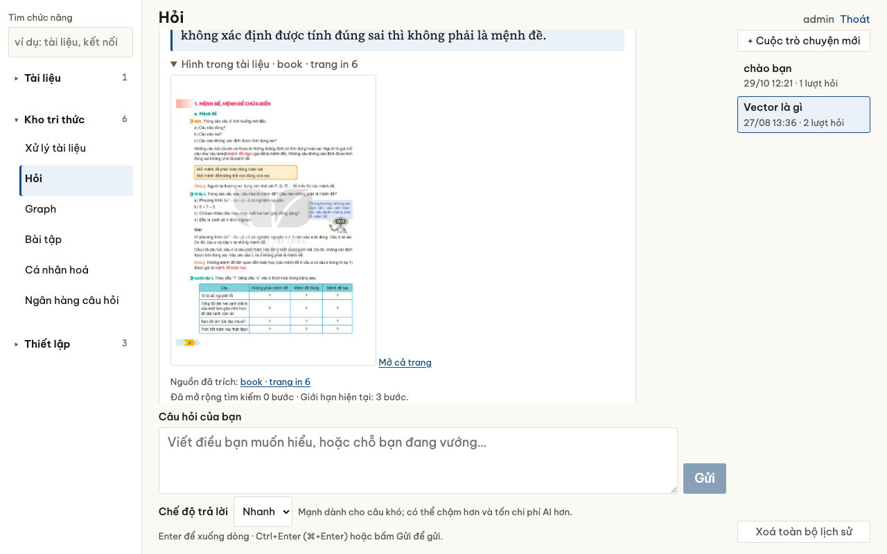
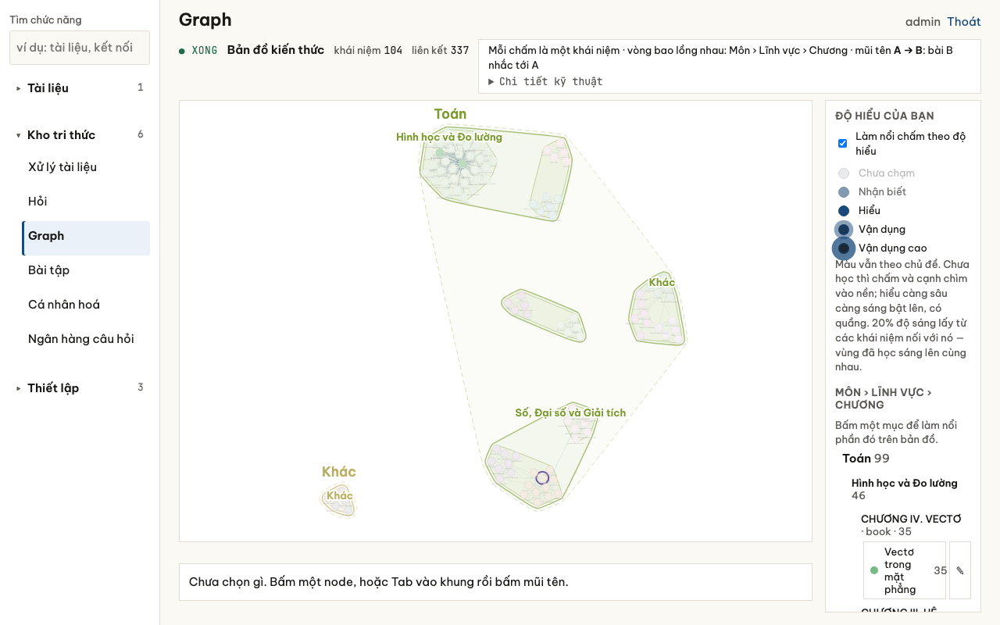
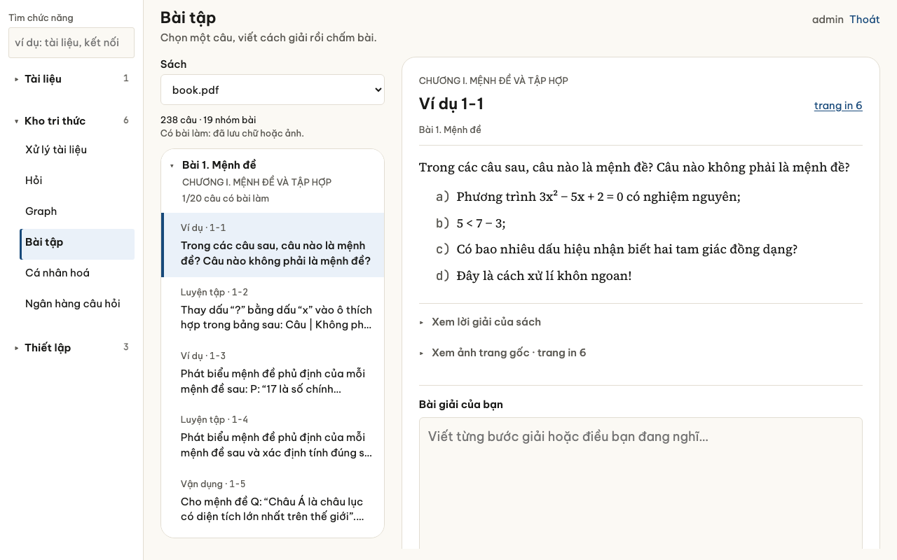
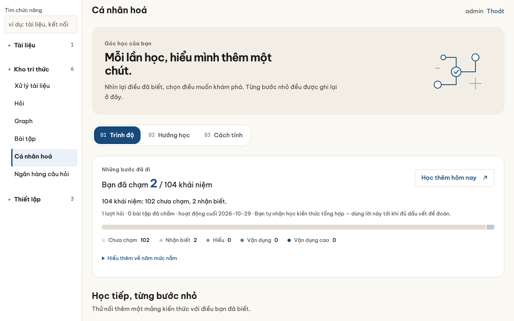
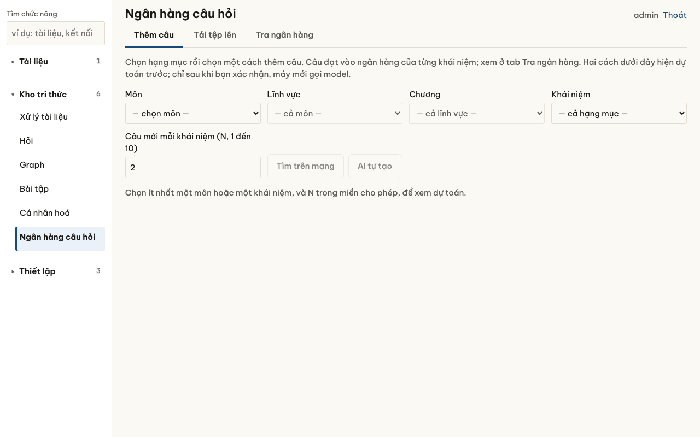

Học từ chính sách của bạn, và biết mình hiểu tới đâu
AgentHelpLearn là app học tập. Bạn đưa sách giáo khoa hoặc tài liệu vào, app đọc từng trang, rồi giúp bạn hỏi, luyện bài và tự kiểm tra.
- Câu trả lời kèm số trang. App ghi rõ lấy từ trang nào. App vẫn có thể sai, nên số trang là để bạn mở sách ra tự đối chiếu.
- Chấm từng bước. Làm bài xong, app tìm bước sai đầu tiên chứ không chỉ báo đúng hay sai. Bài nào máy chưa kiểm được, app nói rõ.
- Theo dõi mình đã học tới đâu. Mỗi phần kiến thức có một mức app ghi nhận, từ “nhận biết” tới “vận dụng cao”.
- Câu luyện kiểu đề thật. Câu hỏi tìm từ nguồn trên mạng, được lọc theo cách ra đề của Bộ trước khi tới tay bạn.
Nạp được sách và tài liệu của mọi môn.
Dùng app qua 7 bước
Chạm vào ảnh để xem cỡ lớn.
-
Đưa sách vào
Ở màn Tài liệu, tải lên tệp PDF sách giáo khoa hoặc tài liệu thầy cô phát.

-
Để app đọc tài liệu
Ở màn Xử lý tài liệu, app đọc từng trang, ghi lại các ý chính và khái niệm, kèm số trang nơi mỗi ý xuất hiện.

-
Hỏi từ sách
Ở màn Hỏi, gõ câu hỏi bằng lời của bạn. Câu trả lời ghi rõ lấy từ trang nào để bạn mở sách kiểm lại.

-
Xem bản đồ kiến thức
Ở màn Graph, các khái niệm nối với nhau, cho thấy muốn hiểu ý này thì nên nắm ý nào trước.

-
Làm bài tập
Ở màn Bài tập, viết lời giải từng dòng. App chấm đáp số và từng bước, chỉ ra bước sai đầu tiên.

-
Xem mức hiểu
Ở màn Cá nhân hoá, mỗi khái niệm có một mức từ 0 đến 4: chưa chạm, nhận biết, hiểu, vận dụng, vận dụng cao. Mức tăng dần theo việc bạn làm trong app, như hỏi về khái niệm đó hay giải đúng bài. Bạn cũng tự đặt mức được. App gợi ý phần nên học tiếp.

-
Thêm câu luyện kiểu đề thật
Ở màn Ngân hàng câu hỏi, chọn môn, chương hay khái niệm. App tìm thêm câu trên mạng hoặc tự soạn, lọc từng câu rồi mới đưa vào ngân hàng câu của khái niệm đó. Mỗi câu ghi rõ nguồn.



Vì sao cách học này hợp lý?
Mỗi cách làm dưới đây đều dựa trên nghiên cứu đã công bố. Bấm vào từng mục để xem nguồn, mức tin cậy và chỗ còn đang kiểm.
Cần nói rõ: các nghiên cứu này đo trên học sinh, sinh viên và hệ thống khác, phần lớn bằng tiếng Anh. Chưa nghiên cứu nào đo riêng AgentHelpLearn. Chúng cho thấy cách làm có cơ sở, không thay cho việc đo trên chính app.
Mức tin cậy: mạnh là tổng hợp nhiều nghiên cứu hoặc thử nghiệm lớn; vừa là nghiên cứu tốt nhưng bối cảnh khác; yếu là mẫu nhỏ. Cỡ hiệu ứng g hay d cho biết nhóm học theo cách đó hơn nhóm so sánh bao nhiêu: khoảng 0,2 là nhỏ, 0,5 là vừa, 0,8 là lớn.
Bài tập và chấm bài tự động
Học bằng làm bài, không chỉ đọc. Phần kiến thức nào cũng có bài để bạn tự làm.
Xem bằng chứng về luyện bằng làm bài
Tổng hợp 222 nghiên cứu trong lớp học thật, với 48.478 học sinh: làm bài kiểm tra nhỏ giúp nhớ lâu hơn đọc lại, g = 0,499 (Yang và cộng sự 2021). Mạnh.
Đang kiểm: có ý kiến cho rằng hiệu quả này giảm khi bài nhiều bước phức tạp (van Gog & Sweller 2015). Điều này còn tranh cãi.
Nhận xét cụ thể, không chỉ báo đúng sai. App nói bạn sai ở đâu và vì sao.
Xem bằng chứng về phản hồi chi tiết
Phản hồi giàu thông tin có cỡ hiệu ứng d = 0,99, khen hay chê đơn thuần chỉ 0,24 (Wisniewski và cộng sự 2020). Khi học trên máy tính, phản hồi chi tiết đạt 0,49, chỉ báo đúng sai đạt 0,05 (Van der Kleij và cộng sự 2015). Mạnh.
Chấm từng bước, không chỉ đáp số. Bài chỉ được tính đúng khi đáp số đúng và mọi bước đều đúng.
Xem bằng chứng về chấm từng bước
Trong một bộ thử lớn, lời giải có đáp số đúng nhưng có bước sai chiếm 18,8% ở bộ bài MATH và 51,8% ở bộ bài Omni-MATH (Zheng và cộng sự 2025). Chỉ chấm đáp số sẽ bỏ sót các bước sai này. Vừa.
Đang kiểm: chưa có định nghĩa chuẩn cho “một bước”. Máy chưa tự kiểm được phương trình lượng giác và phần lớn bài hình học. Gặp bài như vậy, app báo “chưa kiểm được” thay vì đoán.
Đáp số được so bằng phép tính, lời giải được so với lời giải mẫu. Phần nào tính được thì máy tính kiểm; phần lời thì chấm với lời giải mẫu kèm theo.
Xem bằng chứng về chấm có đáp án
AI chấm không có đáp án cho qua đáp số toán sai ở 14 trên 20 ca; có đáp án tham chiếu thì còn 15% (Zheng và cộng sự 2023). Đưa lời giải mẫu cho máy chấm GPT-3.5 thì điểm F1 khi phán cả bài đúng hay sai tăng từ 0,59 lên 0,97, còn khi tìm từng bước sai chỉ tăng từ 0,42 lên 0,61. Điểm F1 bằng 1 là không bỏ sót và không báo nhầm (Daheim và cộng sự 2024). Vừa.
Đang kiểm: chưa nghiên cứu nào đo máy chấm khớp với giáo viên tới đâu trên bài toán tiếng Việt.
Cá nhân hoá, đo mức hiểu và câu hỏi từ mạng
Thang mức nắm theo khung đánh giá quen thuộc. Các mức nhận biết, hiểu, vận dụng mượn cách thầy cô vẫn phân loại câu hỏi. Máy chỉ đưa bạn lên mức vận dụng khi có bài tự làm được chấm đúng.
Xem bằng chứng về thang mức nắm
Thang Bloom bản sửa đổi xếp “giải thích” vào mức hiểu, còn “dùng một cách làm trong tình huống cụ thể” là vận dụng (Krathwohl 2002). Mạnh. Thang SOLO phân biệt nắm từng ý rời với nối được các ý thành một khối (Biggs & Collis 1982). Vừa.
Đang kiểm: việc ghép bốn mức với Bloom và SOLO là suy luận thiết kế của nhóm, chưa có văn bản chính thức nào làm vậy. Công văn 7991/BGDĐT-GDTrH (2024) dùng ba mức. Bậc cao nhất hiện gần với “nối các ý đã học” hơn là “giải quyết vấn đề mới”. Vì vậy, hãy xem mức này là nhật ký những gì bạn đã làm, chưa phải phép đo sự hiểu.
Đang làm: đòi bạn tự giải thích. Hiện mức “hiểu” chưa đòi bạn giải thích bằng lời của mình. Nhóm đang xây phần chấm lời tự giải thích để mức này đo đúng hơn.
Xem vì sao chọn hướng này, và chỗ còn thiếu
Tự giải thích giúp học, g = 0,55 (Bisra và cộng sự 2018). Mạnh.
Máy chấm lời tự giải thích bài toán lớp 8 khớp với người ở mức κ ≈ 0,63, trong khi hai người chấm khớp nhau ở 0,67. Chỉ số κ bằng 1 là khớp hoàn toàn (Yamauchi và cộng sự 2025). Yếu, 12 bài. Với bài giải tích là 0,68 so với 0,70 giữa hai người (Chen và cộng sự 2026). Vừa.
Đang kiểm: mức “nắm từng ý rời” khó chấm nhất: trong một thử nghiệm, máy không xếp đúng bài nào ở mức này (Zhang và cộng sự 2025). Chưa ai đo trên tiếng Việt.
Chỗ app còn thiếu: mức không bao giờ giảm, kể cả khi bạn lâu không ôn, nên app chưa đo được bạn còn nhớ hay không. Mức bạn tự đặt và mức máy ghi đang nằm chung một chỗ.
Câu hỏi từ mạng phải qua bộ lọc trước khi tới tay bạn. Mỗi câu tìm được đều được kiểm theo một bộ tiêu chí về khuôn đề, đáp án và cách viết câu. Câu chỉ lệch nhẹ vẫn vào ngân hàng nhưng kèm cảnh báo. Câu đáng ngờ được đưa sang chờ người soát, không bị loại oan.
Xem căn cứ của bộ lọc câu hỏi
Khuôn đề theo Quyết định 764/QĐ-BGDĐT (2024) về cấu trúc đề thi tốt nghiệp THPT từ năm 2025. Ví dụ môn Toán có 12 câu nhiều lựa chọn, 4 câu đúng/sai và 6 câu trả lời ngắn. Yêu cầu chung của đề theo Thông tư 24/2024/TT-BGDĐT, Điều 5. Quy tắc viết câu nhiều lựa chọn theo Haladyna và cộng sự 2002. Mạnh. Câu viết lỗi làm sai lệch điểm của người thi (Downing 2005, Tarrant & Ware 2008). Yếu: mới đọc tóm tắt.
Đang kiểm: tiêu chí đang được hiệu chỉnh trên đề sách giáo khoa và đề tốt nghiệp 2025 của Bộ. Trong lúc đó, bộ lọc chưa tự loại câu nào, chỉ đẩy câu đáng ngờ sang chờ soát. Một bộ 110 câu mẫu có nhãn đã được duyệt để đo bộ lọc. Tiêu chí riêng cho Lí và Hóa đã viết nhưng chưa bật.
Đăng nhập để bắt đầu.